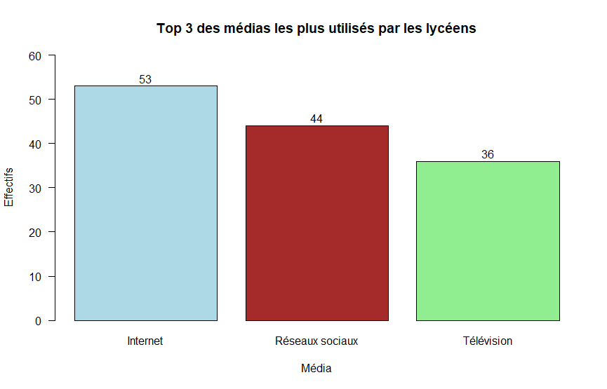

Présentation du projet
Ce projet d'enquête analyse l'impact des médias sur les lycéens. À partir d'un questionnaire administré auprès d'un échantillon de lycéens, il étudie leurs habitudes de consommation médiatique et la manière dont ces contenus influencent leur perception de l'actualité et de la société. Les données recueillies ont été traitées statistiquement sous R afin de dégager des tendances et des informations pertinentes.
Démarche
Le projet a été réalisé en travail de groupe (4 personnes), avec un suivi assuré par des réunions hebdomadaires. Les outils utilisés : RStudio, Excel et LaTeX.

Ce que j'ai appris
Ce projet nous a permis de découvrir concrètement l'analyse statistique, depuis la collecte et le nettoyage des données jusqu'à l'interprétation des résultats, en utilisant des outils essentiels comme RStudio, Excel, LaTeX et Marp.
Conception et administration d'un questionnaire d'enquête auprès d'un public cible.
Maîtrise du cycle complet : collecte → nettoyage → analyse → restitution.
Utilisation de RStudio pour transformer des données brutes en informations utiles.
Rédaction d'un rapport scientifique structuré avec LaTeX.